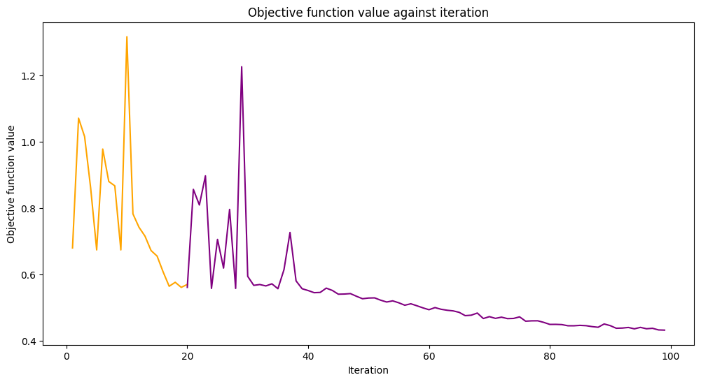

<!doctype html>
<html class="no-js" lang="ko-KR">
  <head><meta charset="utf-8"/>
    <meta name="viewport" content="width=device-width,initial-scale=1"/>
    <meta name="color-scheme" content="light dark"><meta name="viewport" content="width=device-width, initial-scale=1" />
<link rel="index" title="색인" href="../genindex.html" /><link rel="search" title="검색" href="../search.html" /><link rel="next" title="Qiskit Neural Networks의 유효 차원" href="10_effective_dimension.html" /><link rel="prev" title="기계 학습 응용프로그램(Application) 을 위한 양자 커널 학습" href="08_quantum_kernel_trainer.html" />

    <!-- Generated with Sphinx 7.1.2 and Furo 2023.08.19 -->
        <title>저장, Qiskit 머신 러닝 모델 로딩 및 연속 학습 - Qiskit Machine Learning 0.7.1</title>
      <link rel="stylesheet" type="text/css" href="../_static/styles/furo.css?v=135e06be" />
    <link rel="stylesheet" type="text/css" href="../_static/pygments.css?v=fd506691" />
    <link rel="stylesheet" type="text/css" href="../_static/styles/qiskit-sphinx-theme.css?v=fe84956c" />
    <link rel="stylesheet" type="text/css" href="../_static/styles/qiskit-ecosystem.css?v=745c5aa7" />
    <link rel="stylesheet" type="text/css" href="../_static/jupyter-sphinx.css" />
    <link rel="stylesheet" type="text/css" href="../_static/design-style.1e8bd061cd6da7fc9cf755528e8ffc24.min.css?v=0a3b3ea7" />
    <link rel="stylesheet" type="text/css" href="../_static/nbsphinx-code-cells.css" />
    <link rel="stylesheet" type="text/css" href="../_static/styles/furo-extensions.css?v=36a5483c" />
    
    


<style>
  body {
    --color-code-background: #ffffff;
  --color-code-foreground: black;
  
  }
  @media not print {
    body[data-theme="dark"] {
      --color-code-background: #202020;
  --color-code-foreground: #d0d0d0;
  
    }
    @media (prefers-color-scheme: dark) {
      body:not([data-theme="light"]) {
        --color-code-background: #202020;
  --color-code-foreground: #d0d0d0;
  
      }
    }
  }
</style><link rel="preconnect" href="https://fonts.googleapis.com">
<link rel="preconnect" href="https://fonts.gstatic.com" crossorigin><link href="https://fonts.googleapis.com/css2?family=IBM+Plex+Mono:wght@400;600&family=IBM+Plex+Sans:ital,wght@0,400;0,600;1,400;1,600&display=swap" rel="stylesheet">
<script src="../_static/js/web-components/top-nav-bar.js"></script>
<script>
  (function () {
    window._analytics = {
      segment_key: 'ffdYLviQze3kzomaINXNk6NwpY9LlXcw',
      coremetrics: false,
      optimizely: false,
      googleAddServices: false,
      fullStory: false,
      autoPageEventSpa: false,
      autoFormEvents: false,
      autoPageView: false
    }

    window.digitalData = {
      page: {
        pageInfo: {
          productTitle: 'IBM Q Experience',
          analytics: {
            category: 'Qiskit.org'
          }
        }
      }
    }
  }());
</script>
<script src="https://cloud.ibm.com/analytics/build/bluemix-analytics.min.js"></script>
<script>
  (function () {
    'use strict'

    if (!window.bluemixAnalytics || !window.digitalData) { return }

    const category = window.digitalData.page.pageInfo.analytics.category
    const productTitle = window.digitalData.page.pageInfo.productTitle
    const routeName = 'documentation'

    window.bluemixAnalytics.pageEvent(category, routeName, {
      navigationType: 'pushState',
      productTitle: productTitle,
      title: document.title
    })

    window.trackCta = (action) => {
      if (!window.bluemixAnalytics || !window.digitalData) { return }

      const category = window.digitalData.page.pageInfo.analytics.category
      const productTitle = window.digitalData.page.pageInfo.productTitle

      window.bluemixAnalytics.trackEvent('CTA Clicked', {
        productTitle,
        category,
        CTA: action
      })
    }

  }());
</script></head>
  <body>
    
    <script>document.body.dataset.theme = "light";</script>
    
<svg xmlns="http://www.w3.org/2000/svg" style="display: none;">
  <symbol id="svg-toc" viewBox="0 0 24 24">
    <title>Contents</title>
    <svg id="icon" xmlns="http://www.w3.org/2000/svg" viewBox="0 0 32 32">
      <defs><style>.cls-1{fill:none;}</style></defs>
      <path d="M28,4H4A2,2,0,0,0,2,6V26a2,2,0,0,0,2,2H28a2,2,0,0,0,2-2V6A2,2,0,0,0,28,4ZM4,6H20V26H4ZM28,26H22V6h6Z"/>
      <rect id="_Transparent_Rectangle_" data-name="&lt;Transparent Rectangle&gt;" class="cls-1" width="32" height="32"/>
    </svg>
  </symbol>
  <symbol id="svg-menu" viewBox="0 0 24 24">
    <title>Menu</title>
    <svg id="icon" xmlns="http://www.w3.org/2000/svg" viewBox="0 0 32 32">
      <defs><style>.cls-1{fill:none;}</style></defs>
      <rect x="4" y="6" width="24" height="2"/>
      <rect x="4" y="24" width="24" height="2"/>
      <rect x="4" y="12" width="24" height="2"/>
      <rect x="4" y="18" width="24" height="2"/>
      <rect id="_Transparent_Rectangle_" data-name="&lt;Transparent Rectangle&gt;" class="cls-1" width="32" height="32"/>
    </svg>
  </symbol>
  <symbol id="svg-arrow-right" viewBox="0 0 24 24">
    <title>Expand</title>
    <svg version="1.1" id="icon" xmlns="http://www.w3.org/2000/svg" x="0px" y="0px"
         viewBox="0 0 32 32" style="enable-background:new 0 0 32 32;" xml:space="preserve"><polygon points="22,16 12,26 10.6,24.6 19.2,16 10.6,7.4 12,6 " stroke="currentColor"/>
      <rect id="_x3C_Transparent_Rectangle_x3E_" fill="none" width="32" height="32"/>
    </svg>
  </symbol>
  <symbol id="svg-new-tab" viewBox="0 0 32 32">
    <svg id="icon" xmlns="http://www.w3.org/2000/svg" width="32" height="32" viewBox="0 0 32 32">
      <defs>
        <style>
          .cls-1 {
            fill: none;
          }
        </style>
      </defs>
      <path fill="#6929C4" d="M26,28H6a2.0027,2.0027,0,0,1-2-2V6A2.0027,2.0027,0,0,1,6,4H16V6H6V26H26V16h2V26A2.0027,2.0027,0,0,1,26,28Z"/>
      <polygon fill="#6929C4" points="20 2 20 4 26.586 4 18 12.586 19.414 14 28 5.414 28 12 30 12 30 2 20 2"/>
      <rect id="_Transparent_Rectangle_" data-name="&lt;Transparent Rectangle&gt;" class="cls-1" width="32" height="32"/>
    </svg>
  </symbol>
  <symbol id="svg-sun" viewBox="0 0 24 24">
    <title>Light mode</title>
    <svg xmlns="http://www.w3.org/2000/svg" viewBox="0 0 24 24" fill="none" stroke="currentColor"
      stroke-width="1.5" stroke-linecap="round" stroke-linejoin="round" class="feather-sun">
      <circle cx="12" cy="12" r="5"></circle>
      <line x1="12" y1="1" x2="12" y2="3"></line>
      <line x1="12" y1="21" x2="12" y2="23"></line>
      <line x1="4.22" y1="4.22" x2="5.64" y2="5.64"></line>
      <line x1="18.36" y1="18.36" x2="19.78" y2="19.78"></line>
      <line x1="1" y1="12" x2="3" y2="12"></line>
      <line x1="21" y1="12" x2="23" y2="12"></line>
      <line x1="4.22" y1="19.78" x2="5.64" y2="18.36"></line>
      <line x1="18.36" y1="5.64" x2="19.78" y2="4.22"></line>
    </svg>
  </symbol>
  <symbol id="svg-moon" viewBox="0 0 24 24">
    <title>Dark mode</title>
    <svg xmlns="http://www.w3.org/2000/svg" viewBox="0 0 24 24" fill="none" stroke="currentColor"
      stroke-width="1.5" stroke-linecap="round" stroke-linejoin="round" class="icon-tabler-moon">
      <path stroke="none" d="M0 0h24v24H0z" fill="none" />
      <path d="M12 3c.132 0 .263 0 .393 0a7.5 7.5 0 0 0 7.92 12.446a9 9 0 1 1 -8.313 -12.454z" />
    </svg>
  </symbol>
  <symbol id="svg-sun-half" viewBox="0 0 24 24">
    <title>Auto light/dark mode</title>
    <svg xmlns="http://www.w3.org/2000/svg" viewBox="0 0 24 24" fill="none" stroke="currentColor"
      stroke-width="1.5" stroke-linecap="round" stroke-linejoin="round" class="icon-tabler-shadow">
      <path stroke="none" d="M0 0h24v24H0z" fill="none"/>
      <circle cx="12" cy="12" r="9" />
      <path d="M13 12h5" />
      <path d="M13 15h4" />
      <path d="M13 18h1" />
      <path d="M13 9h4" />
      <path d="M13 6h1" />
    </svg>
  </symbol>
</svg>

<input type="checkbox" class="sidebar-toggle" name="__navigation" id="__navigation">
<input type="checkbox" class="sidebar-toggle" name="__toc" id="__toc">
<label class="overlay sidebar-overlay" for="__navigation">
  <div class="visually-hidden">Hide navigation sidebar</div>
</label>
<label class="overlay toc-overlay" for="__toc">
  <div class="visually-hidden">Hide table of contents sidebar</div>
</label>

<div class="announcement">
  <aside class="announcement-content">
     This project's translations are no longer maintained. See the <a href=https://github.com/qiskit-community/qiskit-translations/tree/main#readme>announcement</a> 
  </aside>
</div>

<div class="page">
  <header class="mobile-header">
    <div class="header-left">
      <label class="nav-overlay-icon" for="__navigation">
        <div class="visually-hidden">Toggle site navigation sidebar</div>
        <i class="icon"><svg><use href="#svg-menu"></use></svg></i>
      </label>
    </div>
    <div class="header-center">
      <a href="../index.html"><div class="brand">Qiskit Machine Learning 0.7.1</div></a>
    </div>
    <div class="header-right">
      <div class="theme-toggle-container theme-toggle-header">
        <button class="theme-toggle">
          <div class="visually-hidden">Toggle Light / Dark / Auto color theme</div>
          <svg class="theme-icon-when-auto"><use href="#svg-sun-half"></use></svg>
          <svg class="theme-icon-when-dark"><use href="#svg-moon"></use></svg>
          <svg class="theme-icon-when-light"><use href="#svg-sun"></use></svg>
        </button>
      </div>
      <label class="toc-overlay-icon toc-header-icon" for="__toc">
        <div class="visually-hidden">Toggle table of contents sidebar</div>
        <i class="icon"><svg><use href="#svg-toc"></use></svg></i>
      </label>
    </div>
  </header>
  <aside class="sidebar-drawer">
    <div class="sidebar-container">
      
      <div class="sidebar-sticky"><div class="sidebar-brand">
  <a href="https://www.qiskit.org/ecosystem">
    <div class="sidebar-logo-container">
      
    </div>
  </a>
  
  <span class="sidebar-brand-text">Qiskit Machine Learning 0.7.1</span>
</div><form class="sidebar-search-container" method="get" action="../search.html" role="search">
  <input class="sidebar-search" placeholder="Search" name="q" aria-label="검색">
  <input type="hidden" name="check_keywords" value="yes">
  <input type="hidden" name="area" value="default">
</form>
<div id="searchbox"></div><div class="sidebar-scroll"><div class="sidebar-tree">
  <ul class="current">
<li class="toctree-l1"><a class="reference internal" href="../index.html">개요</a></li>
<li class="toctree-l1"><a class="reference internal" href="../getting_started.html">시작하기</a></li>
<li class="toctree-l1 has-children"><a class="reference internal" href="../migration/index.html">마이그레이션 가이드</a><input class="toctree-checkbox" id="toctree-checkbox-1" name="toctree-checkbox-1" role="switch" type="checkbox"/><label for="toctree-checkbox-1"><div class="visually-hidden">Toggle navigation of 마이그레이션 가이드</div><i class="icon"><svg><use href="#svg-arrow-right"></use></svg></i></label><ul>
<li class="toctree-l2"><a class="reference internal" href="../migration/01_migration_guide_0.5.html">Qiskit 기계 학습 v0.5 이전 안내</a></li>
</ul>
</li>
<li class="toctree-l1 current has-children"><a class="reference internal" href="index.html">튜토리얼</a><input checked="" class="toctree-checkbox" id="toctree-checkbox-2" name="toctree-checkbox-2" role="switch" type="checkbox"/><label for="toctree-checkbox-2"><div class="visually-hidden">Toggle navigation of 튜토리얼</div><i class="icon"><svg><use href="#svg-arrow-right"></use></svg></i></label><ul class="current">
<li class="toctree-l2"><a class="reference internal" href="01_neural_networks.html">양자 신경망</a></li>
<li class="toctree-l2"><a class="reference internal" href="02_neural_network_classifier_and_regressor.html">신경망 분류기 &amp; 회귀기</a></li>
<li class="toctree-l2"><a class="reference internal" href="02a_training_a_quantum_model_on_a_real_dataset.html">Training a Quantum Model on a Real Dataset</a></li>
<li class="toctree-l2"><a class="reference internal" href="03_quantum_kernel.html">양자 커널 기계 학습</a></li>
<li class="toctree-l2"><a class="reference internal" href="04_torch_qgan.html">PyTorch qGAN Implementation</a></li>
<li class="toctree-l2"><a class="reference internal" href="05_torch_connector.html">토치 커넥터 및 하이브리드 QNN</a></li>
<li class="toctree-l2"><a class="reference internal" href="07_pegasos_qsvc.html">Pegasos Quantum Support Vector Classifier</a></li>
<li class="toctree-l2"><a class="reference internal" href="08_quantum_kernel_trainer.html">기계 학습 응용프로그램(Application) 을 위한 양자 커널 학습</a></li>
<li class="toctree-l2 current current-page"><a class="current reference internal" href="#">저장, Qiskit 머신 러닝 모델 로딩 및 연속 학습</a></li>
<li class="toctree-l2"><a class="reference internal" href="10_effective_dimension.html">Qiskit Neural Networks의 유효 차원</a></li>
<li class="toctree-l2"><a class="reference internal" href="11_quantum_convolutional_neural_networks.html">양자 합성곱 신경망</a></li>
<li class="toctree-l2"><a class="reference internal" href="12_quantum_autoencoder.html">The Quantum Autoencoder</a></li>
</ul>
</li>
<li class="toctree-l1 has-children"><a class="reference internal" href="../apidocs/qiskit_machine_learning.html">API 참조</a><input class="toctree-checkbox" id="toctree-checkbox-3" name="toctree-checkbox-3" role="switch" type="checkbox"/><label for="toctree-checkbox-3"><div class="visually-hidden">Toggle navigation of API 참조</div><i class="icon"><svg><use href="#svg-arrow-right"></use></svg></i></label><ul>
<li class="toctree-l2"><a class="reference internal" href="../stubs/qiskit_machine_learning.QiskitMachineLearningError.html">QiskitMachineLearningError</a></li>
<li class="toctree-l2 has-children"><a class="reference internal" href="../apidocs/qiskit_machine_learning.algorithms.html">Quantum machine learning algorithms (<code class="xref py py-mod docutils literal notranslate"><span class="pre">qiskit_machine_learning.algorithms</span></code>)</a><input class="toctree-checkbox" id="toctree-checkbox-4" name="toctree-checkbox-4" role="switch" type="checkbox"/><label for="toctree-checkbox-4"><div class="visually-hidden">Toggle navigation of Quantum machine learning algorithms (qiskit_machine_learning.algorithms)</div><i class="icon"><svg><use href="#svg-arrow-right"></use></svg></i></label><ul>
<li class="toctree-l3"><a class="reference internal" href="../stubs/qiskit_machine_learning.algorithms.TrainableModel.html">TrainableModel</a></li>
<li class="toctree-l3"><a class="reference internal" href="../stubs/qiskit_machine_learning.algorithms.ObjectiveFunction.html">ObjectiveFunction</a></li>
<li class="toctree-l3"><a class="reference internal" href="../stubs/qiskit_machine_learning.algorithms.SerializableModelMixin.html">SerializableModelMixin</a></li>
<li class="toctree-l3"><a class="reference internal" href="../stubs/qiskit_machine_learning.algorithms.BinaryObjectiveFunction.html">BinaryObjectiveFunction</a></li>
<li class="toctree-l3"><a class="reference internal" href="../stubs/qiskit_machine_learning.algorithms.MultiClassObjectiveFunction.html">MultiClassObjectiveFunction</a></li>
<li class="toctree-l3"><a class="reference internal" href="../stubs/qiskit_machine_learning.algorithms.OneHotObjectiveFunction.html">OneHotObjectiveFunction</a></li>
<li class="toctree-l3"><a class="reference internal" href="../stubs/qiskit_machine_learning.algorithms.PegasosQSVC.html">PegasosQSVC</a></li>
<li class="toctree-l3"><a class="reference internal" href="../stubs/qiskit_machine_learning.algorithms.QSVC.html">QSVC</a></li>
<li class="toctree-l3"><a class="reference internal" href="../stubs/qiskit_machine_learning.algorithms.NeuralNetworkClassifier.html">NeuralNetworkClassifier</a></li>
<li class="toctree-l3"><a class="reference internal" href="../stubs/qiskit_machine_learning.algorithms.VQC.html">VQC</a></li>
<li class="toctree-l3"><a class="reference internal" href="../stubs/qiskit_machine_learning.algorithms.QSVR.html">QSVR</a></li>
<li class="toctree-l3"><a class="reference internal" href="../stubs/qiskit_machine_learning.algorithms.NeuralNetworkRegressor.html">NeuralNetworkRegressor</a></li>
<li class="toctree-l3"><a class="reference internal" href="../stubs/qiskit_machine_learning.algorithms.VQR.html">VQR</a></li>
</ul>
</li>
<li class="toctree-l2 has-children"><a class="reference internal" href="../apidocs/qiskit_machine_learning.circuit.library.html">Circuit library for machine learning applications (<code class="xref py py-mod docutils literal notranslate"><span class="pre">qiskit_machine_learning.circuit.library</span></code>)</a><input class="toctree-checkbox" id="toctree-checkbox-5" name="toctree-checkbox-5" role="switch" type="checkbox"/><label for="toctree-checkbox-5"><div class="visually-hidden">Toggle navigation of Circuit library for machine learning applications (qiskit_machine_learning.circuit.library)</div><i class="icon"><svg><use href="#svg-arrow-right"></use></svg></i></label><ul>
<li class="toctree-l3"><a class="reference internal" href="../stubs/qiskit_machine_learning.circuit.library.RawFeatureVector.html">RawFeatureVector</a></li>
<li class="toctree-l3"><a class="reference internal" href="../stubs/qiskit_machine_learning.circuit.library.QNNCircuit.html">QNNCircuit</a></li>
</ul>
</li>
<li class="toctree-l2 has-children"><a class="reference internal" href="../apidocs/qiskit_machine_learning.connectors.html">Connectors (<code class="xref py py-mod docutils literal notranslate"><span class="pre">qiskit_machine_learning.connectors</span></code>)</a><input class="toctree-checkbox" id="toctree-checkbox-6" name="toctree-checkbox-6" role="switch" type="checkbox"/><label for="toctree-checkbox-6"><div class="visually-hidden">Toggle navigation of Connectors (qiskit_machine_learning.connectors)</div><i class="icon"><svg><use href="#svg-arrow-right"></use></svg></i></label><ul>
<li class="toctree-l3"><a class="reference internal" href="../stubs/qiskit_machine_learning.connectors.TorchConnector.html">TorchConnector</a></li>
</ul>
</li>
<li class="toctree-l2 has-children"><a class="reference internal" href="../apidocs/qiskit_machine_learning.datasets.html">Datasets (<code class="xref py py-mod docutils literal notranslate"><span class="pre">qiskit_machine_learning.datasets</span></code>)</a><input class="toctree-checkbox" id="toctree-checkbox-7" name="toctree-checkbox-7" role="switch" type="checkbox"/><label for="toctree-checkbox-7"><div class="visually-hidden">Toggle navigation of Datasets (qiskit_machine_learning.datasets)</div><i class="icon"><svg><use href="#svg-arrow-right"></use></svg></i></label><ul>
<li class="toctree-l3"><a class="reference internal" href="../stubs/qiskit_machine_learning.datasets.ad_hoc_data.html">ad_hoc_data</a></li>
</ul>
</li>
<li class="toctree-l2 has-children"><a class="reference internal" href="../apidocs/qiskit_machine_learning.kernels.html">Quantum kernels (<code class="xref py py-mod docutils literal notranslate"><span class="pre">qiskit_machine_learning.kernels</span></code>)</a><input class="toctree-checkbox" id="toctree-checkbox-8" name="toctree-checkbox-8" role="switch" type="checkbox"/><label for="toctree-checkbox-8"><div class="visually-hidden">Toggle navigation of Quantum kernels (qiskit_machine_learning.kernels)</div><i class="icon"><svg><use href="#svg-arrow-right"></use></svg></i></label><ul>
<li class="toctree-l3"><a class="reference internal" href="../stubs/qiskit_machine_learning.kernels.BaseKernel.html">BaseKernel</a></li>
<li class="toctree-l3"><a class="reference internal" href="../stubs/qiskit_machine_learning.kernels.FidelityQuantumKernel.html">FidelityQuantumKernel</a></li>
<li class="toctree-l3"><a class="reference internal" href="../stubs/qiskit_machine_learning.kernels.FidelityStatevectorKernel.html">FidelityStatevectorKernel</a></li>
<li class="toctree-l3"><a class="reference internal" href="../stubs/qiskit_machine_learning.kernels.TrainableKernel.html">TrainableKernel</a></li>
<li class="toctree-l3"><a class="reference internal" href="../stubs/qiskit_machine_learning.kernels.TrainableFidelityQuantumKernel.html">TrainableFidelityQuantumKernel</a></li>
<li class="toctree-l3"><a class="reference internal" href="../stubs/qiskit_machine_learning.kernels.TrainableFidelityStatevectorKernel.html">TrainableFidelityStatevectorKernel</a></li>
<li class="toctree-l3 has-children"><a class="reference internal" href="../apidocs/qiskit_machine_learning.kernels.algorithms.html">Quantum Kernel Algorithms</a><input class="toctree-checkbox" id="toctree-checkbox-9" name="toctree-checkbox-9" role="switch" type="checkbox"/><label for="toctree-checkbox-9"><div class="visually-hidden">Toggle navigation of Quantum Kernel Algorithms</div><i class="icon"><svg><use href="#svg-arrow-right"></use></svg></i></label><ul>
<li class="toctree-l4"><a class="reference internal" href="../stubs/qiskit_machine_learning.kernels.algorithms.QuantumKernelTrainer.html">QuantumKernelTrainer</a></li>
<li class="toctree-l4"><a class="reference internal" href="../stubs/qiskit_machine_learning.kernels.algorithms.QuantumKernelTrainerResult.html">QuantumKernelTrainerResult</a></li>
</ul>
</li>
</ul>
</li>
<li class="toctree-l2 has-children"><a class="reference internal" href="../apidocs/qiskit_machine_learning.neural_networks.html">Quantum neural networks (<code class="xref py py-mod docutils literal notranslate"><span class="pre">qiskit_machine_learning.neural_networks</span></code>)</a><input class="toctree-checkbox" id="toctree-checkbox-10" name="toctree-checkbox-10" role="switch" type="checkbox"/><label for="toctree-checkbox-10"><div class="visually-hidden">Toggle navigation of Quantum neural networks (qiskit_machine_learning.neural_networks)</div><i class="icon"><svg><use href="#svg-arrow-right"></use></svg></i></label><ul>
<li class="toctree-l3"><a class="reference internal" href="../stubs/qiskit_machine_learning.neural_networks.NeuralNetwork.html">NeuralNetwork</a></li>
<li class="toctree-l3"><a class="reference internal" href="../stubs/qiskit_machine_learning.neural_networks.EstimatorQNN.html">EstimatorQNN</a></li>
<li class="toctree-l3"><a class="reference internal" href="../stubs/qiskit_machine_learning.neural_networks.SamplerQNN.html">SamplerQNN</a></li>
<li class="toctree-l3"><a class="reference internal" href="../stubs/qiskit_machine_learning.neural_networks.EffectiveDimension.html">EffectiveDimension</a></li>
<li class="toctree-l3"><a class="reference internal" href="../stubs/qiskit_machine_learning.neural_networks.LocalEffectiveDimension.html">LocalEffectiveDimension</a></li>
</ul>
</li>
<li class="toctree-l2 has-children"><a class="reference internal" href="../apidocs/qiskit_machine_learning.utils.html">Utility functions and classes (<code class="xref py py-mod docutils literal notranslate"><span class="pre">qiskit_machine_learning.utils</span></code>)</a><input class="toctree-checkbox" id="toctree-checkbox-11" name="toctree-checkbox-11" role="switch" type="checkbox"/><label for="toctree-checkbox-11"><div class="visually-hidden">Toggle navigation of Utility functions and classes (qiskit_machine_learning.utils)</div><i class="icon"><svg><use href="#svg-arrow-right"></use></svg></i></label><ul>
<li class="toctree-l3 has-children"><a class="reference internal" href="../apidocs/qiskit_machine_learning.utils.loss_functions.html">Loss Functions (<code class="xref py py-mod docutils literal notranslate"><span class="pre">qiskit_machine_learning.utils.loss_functions</span></code>)</a><input class="toctree-checkbox" id="toctree-checkbox-12" name="toctree-checkbox-12" role="switch" type="checkbox"/><label for="toctree-checkbox-12"><div class="visually-hidden">Toggle navigation of Loss Functions (qiskit_machine_learning.utils.loss_functions)</div><i class="icon"><svg><use href="#svg-arrow-right"></use></svg></i></label><ul>
<li class="toctree-l4"><a class="reference internal" href="../stubs/qiskit_machine_learning.utils.loss_functions.Loss.html">Loss</a></li>
<li class="toctree-l4"><a class="reference internal" href="../stubs/qiskit_machine_learning.utils.loss_functions.KernelLoss.html">KernelLoss</a></li>
<li class="toctree-l4"><a class="reference internal" href="../stubs/qiskit_machine_learning.utils.loss_functions.L1Loss.html">L1Loss</a></li>
<li class="toctree-l4"><a class="reference internal" href="../stubs/qiskit_machine_learning.utils.loss_functions.L2Loss.html">L2Loss</a></li>
<li class="toctree-l4"><a class="reference internal" href="../stubs/qiskit_machine_learning.utils.loss_functions.CrossEntropyLoss.html">CrossEntropyLoss</a></li>
<li class="toctree-l4"><a class="reference internal" href="../stubs/qiskit_machine_learning.utils.loss_functions.SVCLoss.html">SVCLoss</a></li>
</ul>
</li>
</ul>
</li>
</ul>
</li>
<li class="toctree-l1"><a class="reference internal" href="../release_notes.html">릴리스 노트</a></li>
<li class="toctree-l1"><a class="reference external" href="https://github.com/qiskit-community/qiskit-machine-learning">깃허브</a></li>
</ul>

</div></div><div class="qiskit-translations-container" aria-label="languages">
  <input id="translations-checkbox" name="translations-checkbox" role="switch" type="checkbox">
  <div class="qiskit-translations-header-container"><label for="translations-checkbox">
      <p role="note">Korean</p>
      <div class="qiskit-translations-toggle-container">
        <div class="visually-hidden">Toggle translations list</div>
        <i class="icon"><svg><use href="#svg-arrow-right"></use></svg></i>
      </div>
    </label>
  </div>
  <div class="qiskit-translations-list-container">
    <ul>
      
        <li><a href="/qiskit-machine-learning/tutorials/09_saving_and_loading_models.html">English</a></li>
      
        <li><a href="/qiskit-machine-learning/locale/bn_BN/tutorials/09_saving_and_loading_models.html">Bengali</a></li>
      
        <li><a href="/qiskit-machine-learning/locale/fr_FR/tutorials/09_saving_and_loading_models.html">French</a></li>
      
        <li><a href="/qiskit-machine-learning/locale/hi_IN/tutorials/09_saving_and_loading_models.html">Hindi</a></li>
      
        <li><a href="/qiskit-machine-learning/locale/ja_JP/tutorials/09_saving_and_loading_models.html">Japanese</a></li>
      
        <li><a href="/qiskit-machine-learning/locale/ko_KR/tutorials/09_saving_and_loading_models.html">Korean</a></li>
      
        <li><a href="/qiskit-machine-learning/locale/ru_RU/tutorials/09_saving_and_loading_models.html">Russian</a></li>
      
        <li><a href="/qiskit-machine-learning/locale/es_UN/tutorials/09_saving_and_loading_models.html">Spanish</a></li>
      
        <li><a href="/qiskit-machine-learning/locale/ta_IN/tutorials/09_saving_and_loading_models.html">Tamil</a></li>
      
        <li><a href="/qiskit-machine-learning/locale/tr_TR/tutorials/09_saving_and_loading_models.html">Turkish</a></li>
      
    </ul>
  </div>
  <script>
    document.querySelectorAll('.version').forEach((element) => {
      element.addEventListener('click', (evt) => {
        const hash = window.location.hash;
        const complete_url = evt.target.href + hash;
        window.location = complete_url;
        evt.preventDefault();
      });
    });
  </script>
</div>

      </div>
      
    </div>
  </aside>
  <div class="main">
    <div class="content">
      <div class="article-container">
        <a href="#" class="back-to-top muted-link">
          <svg xmlns="http://www.w3.org/2000/svg" viewBox="0 0 24 24">
            <path d="M13 20h-2V8l-5.5 5.5-1.42-1.42L12 4.16l7.92 7.92-1.42 1.42L13 8v12z"></path>
          </svg>
          <span>Back to top</span>
        </a>
        <div class="content-icon-container">
          
<div class="theme-toggle-container theme-toggle-content">
            <button class="theme-toggle">
              <div class="visually-hidden">Toggle Light / Dark / Auto color theme</div>
              <svg class="theme-icon-when-auto"><use href="#svg-sun-half"></use></svg>
              <svg class="theme-icon-when-dark"><use href="#svg-moon"></use></svg>
              <svg class="theme-icon-when-light"><use href="#svg-sun"></use></svg>
            </button>
          </div>
          <label class="toc-overlay-icon toc-content-icon" for="__toc">
            <div class="visually-hidden">Toggle table of contents sidebar</div>
            <i class="icon"><svg><use href="#svg-toc"></use></svg></i>
          </label>
        </div>
        <article role="main">
          <div class="admonition note">
<p class="admonition-title">참고</p>
<p>This page was generated from <a class="reference external" href="https://github.com/qiskit-community/qiskit-machine-learning/blob/stable/0.7/docs/tutorials/09_saving_and_loading_models.ipynb">docs/tutorials/09_saving_and_loading_models.ipynb</a>.</p>
</div>
<section id="저장,-Qiskit-머신-러닝-모델-로딩-및-연속-학습">
<h1>저장, Qiskit 머신 러닝 모델 로딩 및 연속 학습<a class="headerlink" href="#저장,-Qiskit-머신-러닝-모델-로딩-및-연속-학습" title="이 제목에 대한 퍼머링크">#</a></h1>
<p>이 튜토리얼에서는 Qiskit 머신 러닝 모델을 저장하고 로드하는 방법을 다룬다. 모델을 저장하는 기능은 특히 실제 하드웨어에서 모델을 학습하는 데에 많은 시간을 소모되는 경우 매우 중요합니다. 또한 이전에 저장한 학습 모델을 재 사용하는 방법을 보여준다.</p>
<p>이 사용 지침서에서는 다음을 수행하는 방법에 대해 설명한다:</p>
<ul class="simple">
<li><p>간단한 데이터셋을 생성하고 학습/테스트 데이터셋으로 분할하고 그래프를 그려본다.</p></li>
<li><p>모델 훈련후 저장</p></li>
<li><p>저장된 모델 로드 및 학습 재개</p></li>
<li><p>모델 성능 평가</p></li>
<li><p>PyTorch 하이브리드 모델</p></li>
</ul>
<p>First off, we start from the required imports. We’ll heavily use SciKit-Learn on the data preparation step. In the next cell we also fix a random seed for reproducibility purposes.</p>
<div class="nbinput nblast docutils container">
<div class="prompt highlight-none notranslate"><div class="highlight"><pre><span></span>[1]:
</pre></div>
</div>
<div class="input_area highlight-ipython3 notranslate"><div class="highlight"><pre><span></span><span class="kn">import</span> <span class="nn">matplotlib.pyplot</span> <span class="k">as</span> <span class="nn">plt</span>
<span class="kn">import</span> <span class="nn">numpy</span> <span class="k">as</span> <span class="nn">np</span>
<span class="kn">from</span> <span class="nn">qiskit.circuit.library</span> <span class="kn">import</span> <span class="n">RealAmplitudes</span>
<span class="kn">from</span> <span class="nn">qiskit.primitives</span> <span class="kn">import</span> <span class="n">Sampler</span>
<span class="kn">from</span> <span class="nn">qiskit_algorithms.optimizers</span> <span class="kn">import</span> <span class="n">COBYLA</span>
<span class="kn">from</span> <span class="nn">qiskit_algorithms.utils</span> <span class="kn">import</span> <span class="n">algorithm_globals</span>
<span class="kn">from</span> <span class="nn">sklearn.model_selection</span> <span class="kn">import</span> <span class="n">train_test_split</span>
<span class="kn">from</span> <span class="nn">sklearn.preprocessing</span> <span class="kn">import</span> <span class="n">OneHotEncoder</span><span class="p">,</span> <span class="n">MinMaxScaler</span>

<span class="kn">from</span> <span class="nn">qiskit_machine_learning.algorithms.classifiers</span> <span class="kn">import</span> <span class="n">VQC</span>

<span class="kn">from</span> <span class="nn">IPython.display</span> <span class="kn">import</span> <span class="n">clear_output</span>

<span class="n">algorithm_globals</span><span class="o">.</span><span class="n">random_seed</span> <span class="o">=</span> <span class="mi">42</span>
</pre></div>
</div>
</div>
<p>We will be using two quantum simulators, in particular, two instances of the <code class="docutils literal notranslate"><span class="pre">Sampler</span></code> primitive. We’ll start training on the first one, then will resume training on the second one. The approach shown in this tutorial can be used to train a model on a real hardware available on the cloud and then re-use the model for inference on a local simulator.</p>
<div class="nbinput nblast docutils container">
<div class="prompt highlight-none notranslate"><div class="highlight"><pre><span></span>[2]:
</pre></div>
</div>
<div class="input_area highlight-ipython3 notranslate"><div class="highlight"><pre><span></span><span class="n">sampler1</span> <span class="o">=</span> <span class="n">Sampler</span><span class="p">()</span>

<span class="n">sampler2</span> <span class="o">=</span> <span class="n">Sampler</span><span class="p">()</span>
</pre></div>
</div>
</div>
<section id="1.-데이터셋-준비">
<h2>1. 데이터셋 준비<a class="headerlink" href="#1.-데이터셋-준비" title="이 제목에 대한 퍼머링크">#</a></h2>
<p>다음 단계는 데이터셋을 준비하는 것이다. 여기서는 다른 튜토리얼과 동일한 방법으로 일부 데이터를 생성한다. 차이점은 생성된 데이터에 일부 변환을 적용한다는 것이다. <code class="docutils literal notranslate"><span class="pre">40</span></code> 개의 샘플을 생성하고, 각 샘플은 <code class="docutils literal notranslate"><span class="pre">2</span></code> 개의 특징을 가지고 있으므로 특징은 크기가 <code class="docutils literal notranslate"><span class="pre">(40,</span> <span class="pre">2)</span></code> 인 배열이다. 레이블은 열별로 특징들을 합산하여 얻으며 합계가 <code class="docutils literal notranslate"><span class="pre">1</span></code> 보다 크면 이 샘플은 <code class="docutils literal notranslate"><span class="pre">1</span></code> 그렇지 않으면 <code class="docutils literal notranslate"><span class="pre">0</span></code> 으로 표기한다.</p>
<div class="nbinput nblast docutils container">
<div class="prompt highlight-none notranslate"><div class="highlight"><pre><span></span>[3]:
</pre></div>
</div>
<div class="input_area highlight-ipython3 notranslate"><div class="highlight"><pre><span></span><span class="n">num_samples</span> <span class="o">=</span> <span class="mi">40</span>
<span class="n">num_features</span> <span class="o">=</span> <span class="mi">2</span>
<span class="n">features</span> <span class="o">=</span> <span class="mi">2</span> <span class="o">*</span> <span class="n">algorithm_globals</span><span class="o">.</span><span class="n">random</span><span class="o">.</span><span class="n">random</span><span class="p">([</span><span class="n">num_samples</span><span class="p">,</span> <span class="n">num_features</span><span class="p">])</span> <span class="o">-</span> <span class="mi">1</span>
<span class="n">labels</span> <span class="o">=</span> <span class="mi">1</span> <span class="o">*</span> <span class="p">(</span><span class="n">np</span><span class="o">.</span><span class="n">sum</span><span class="p">(</span><span class="n">features</span><span class="p">,</span> <span class="n">axis</span><span class="o">=</span><span class="mi">1</span><span class="p">)</span> <span class="o">&gt;=</span> <span class="mi">0</span><span class="p">)</span>  <span class="c1"># in { 0,  1}</span>
</pre></div>
</div>
</div>
<p>그런 다음 SciKit-Learn의 <code class="docutils literal notranslate"><span class="pre">MinMaxScaler</span></code> 를 적용하여 기능을 <code class="docutils literal notranslate"><span class="pre">[0,</span> <span class="pre">1]</span></code> 범위로 축소한다. 이러한 변환을 적용하면 모델을 학습시킬 때 더 잘 수렴한다.</p>
<div class="nbinput docutils container">
<div class="prompt highlight-none notranslate"><div class="highlight"><pre><span></span>[4]:
</pre></div>
</div>
<div class="input_area highlight-ipython3 notranslate"><div class="highlight"><pre><span></span><span class="n">features</span> <span class="o">=</span> <span class="n">MinMaxScaler</span><span class="p">()</span><span class="o">.</span><span class="n">fit_transform</span><span class="p">(</span><span class="n">features</span><span class="p">)</span>
<span class="n">features</span><span class="o">.</span><span class="n">shape</span>
</pre></div>
</div>
</div>
<div class="nboutput nblast docutils container">
<div class="prompt highlight-none notranslate"><div class="highlight"><pre><span></span>[4]:
</pre></div>
</div>
<div class="output_area docutils container">
<div class="highlight"><pre>
(40, 2)
</pre></div></div>
</div>
<p>Let’s take a look at the features of the first <code class="docutils literal notranslate"><span class="pre">5</span></code> samples of our dataset after the transformation.</p>
<div class="nbinput docutils container">
<div class="prompt highlight-none notranslate"><div class="highlight"><pre><span></span>[5]:
</pre></div>
</div>
<div class="input_area highlight-ipython3 notranslate"><div class="highlight"><pre><span></span><span class="n">features</span><span class="p">[</span><span class="mi">0</span><span class="p">:</span><span class="mi">5</span><span class="p">,</span> <span class="p">:]</span>
</pre></div>
</div>
</div>
<div class="nboutput nblast docutils container">
<div class="prompt highlight-none notranslate"><div class="highlight"><pre><span></span>[5]:
</pre></div>
</div>
<div class="output_area docutils container">
<div class="highlight"><pre>
array([[0.79067335, 0.44566143],
       [0.88072937, 0.7126244 ],
       [0.06741233, 1.        ],
       [0.7770372 , 0.80422817],
       [0.10351936, 0.45754615]])
</pre></div></div>
</div>
<p>훈련할 모델로는 <code class="docutils literal notranslate"><span class="pre">VQC</span></code> 혹은 변분 양자 분류기(Variational Quantum Classifier)를 선택한다. 기본적으로 이 모델은 one-hot 인코딩된 레이블을 사용하므로, <code class="docutils literal notranslate"><span class="pre">{0,</span> <span class="pre">1}</span></code> 세트에 있는 레이블을 one-hot 표현법으로 변환해야 한다. 이 변환을 위해서 동일하게 SciKit-Learn를 이용한다. 입력 배열이 <code class="docutils literal notranslate"><span class="pre">(num_samples,</span> <span class="pre">1)</span></code> 과 같은 형태로 바뀌게 됨에 주의한다. <code class="docutils literal notranslate"><span class="pre">OneHotEncoder</span></code> 인코더는 1D 배열에는 작동하지 않지만, 우리의 레이블은 1D 배열 이므로, 이 경우 사용자는 배열이 우리가 직면한 문제와 같이 하나의 feature 만을 갖는지, 또는 하나의 sample 만을 갖는 것인지 결정해야 한다. 또한 기본적으로 인코더는 희소 배열을 반환하지만, 조밀한 배열을 갖는 것이 데이터 세트를 플롯팅하기에 더 쉽기 때문에,  <code class="docutils literal notranslate"><span class="pre">sparse</span></code> 를 <code class="docutils literal notranslate"><span class="pre">False</span></code> 로 설정한다.</p>
<div class="nbinput docutils container">
<div class="prompt highlight-none notranslate"><div class="highlight"><pre><span></span>[6]:
</pre></div>
</div>
<div class="input_area highlight-ipython3 notranslate"><div class="highlight"><pre><span></span><span class="n">labels</span> <span class="o">=</span> <span class="n">OneHotEncoder</span><span class="p">(</span><span class="n">sparse_output</span><span class="o">=</span><span class="kc">False</span><span class="p">)</span><span class="o">.</span><span class="n">fit_transform</span><span class="p">(</span><span class="n">labels</span><span class="o">.</span><span class="n">reshape</span><span class="p">(</span><span class="o">-</span><span class="mi">1</span><span class="p">,</span> <span class="mi">1</span><span class="p">))</span>
<span class="n">labels</span><span class="o">.</span><span class="n">shape</span>
</pre></div>
</div>
</div>
<div class="nboutput nblast docutils container">
<div class="prompt highlight-none notranslate"><div class="highlight"><pre><span></span>[6]:
</pre></div>
</div>
<div class="output_area docutils container">
<div class="highlight"><pre>
(40, 2)
</pre></div></div>
</div>
<p>Let’s take a look at the labels of the first <code class="docutils literal notranslate"><span class="pre">5</span></code> labels of the dataset. The labels should be one-hot encoded.</p>
<div class="nbinput docutils container">
<div class="prompt highlight-none notranslate"><div class="highlight"><pre><span></span>[7]:
</pre></div>
</div>
<div class="input_area highlight-ipython3 notranslate"><div class="highlight"><pre><span></span><span class="n">labels</span><span class="p">[</span><span class="mi">0</span><span class="p">:</span><span class="mi">5</span><span class="p">,</span> <span class="p">:]</span>
</pre></div>
</div>
</div>
<div class="nboutput nblast docutils container">
<div class="prompt highlight-none notranslate"><div class="highlight"><pre><span></span>[7]:
</pre></div>
</div>
<div class="output_area docutils container">
<div class="highlight"><pre>
array([[0., 1.],
       [0., 1.],
       [0., 1.],
       [0., 1.],
       [1., 0.]])
</pre></div></div>
</div>
<p>이제 데이터 세트를 훈련 데이터 세트와 테스트 데이터 세트의 두 부분으로 나눈다. 일반적으로 전체 데이터 세트의 80%는 훈련 부분에, 20%는 테스트 부분에 할당한다. 우리의 경우 훈련 데이터 세트에는 <code class="docutils literal notranslate"><span class="pre">30</span></code> 개의 샘플이 있다. 테스트 데이터 세트는 모델이 보이지 않는 데이터에 대해 모델이 얼마나 잘 작동하는지 확인하도록 훈련될 때 한 번만 사용하도록 한다. SciKit-Learn의 <a href="#id1"><span class="problematic" id="id2">``</span></a>train_test_split``을 사용하여 데이터를 나눈다.</p>
<div class="nbinput docutils container">
<div class="prompt highlight-none notranslate"><div class="highlight"><pre><span></span>[8]:
</pre></div>
</div>
<div class="input_area highlight-ipython3 notranslate"><div class="highlight"><pre><span></span><span class="n">train_features</span><span class="p">,</span> <span class="n">test_features</span><span class="p">,</span> <span class="n">train_labels</span><span class="p">,</span> <span class="n">test_labels</span> <span class="o">=</span> <span class="n">train_test_split</span><span class="p">(</span>
    <span class="n">features</span><span class="p">,</span> <span class="n">labels</span><span class="p">,</span> <span class="n">train_size</span><span class="o">=</span><span class="mi">30</span><span class="p">,</span> <span class="n">random_state</span><span class="o">=</span><span class="n">algorithm_globals</span><span class="o">.</span><span class="n">random_seed</span>
<span class="p">)</span>
<span class="n">train_features</span><span class="o">.</span><span class="n">shape</span>
</pre></div>
</div>
</div>
<div class="nboutput nblast docutils container">
<div class="prompt highlight-none notranslate"><div class="highlight"><pre><span></span>[8]:
</pre></div>
</div>
<div class="output_area docutils container">
<div class="highlight"><pre>
(30, 2)
</pre></div></div>
</div>
<p>Now it is time to see how our dataset looks like. Let’s plot it.</p>
<div class="nbinput docutils container">
<div class="prompt highlight-none notranslate"><div class="highlight"><pre><span></span>[9]:
</pre></div>
</div>
<div class="input_area highlight-ipython3 notranslate"><div class="highlight"><pre><span></span><span class="k">def</span> <span class="nf">plot_dataset</span><span class="p">():</span>
    <span class="n">plt</span><span class="o">.</span><span class="n">scatter</span><span class="p">(</span>
        <span class="n">train_features</span><span class="p">[</span><span class="n">np</span><span class="o">.</span><span class="n">where</span><span class="p">(</span><span class="n">train_labels</span><span class="p">[:,</span> <span class="mi">0</span><span class="p">]</span> <span class="o">==</span> <span class="mi">0</span><span class="p">),</span> <span class="mi">0</span><span class="p">],</span>
        <span class="n">train_features</span><span class="p">[</span><span class="n">np</span><span class="o">.</span><span class="n">where</span><span class="p">(</span><span class="n">train_labels</span><span class="p">[:,</span> <span class="mi">0</span><span class="p">]</span> <span class="o">==</span> <span class="mi">0</span><span class="p">),</span> <span class="mi">1</span><span class="p">],</span>
        <span class="n">marker</span><span class="o">=</span><span class="s2">&quot;o&quot;</span><span class="p">,</span>
        <span class="n">color</span><span class="o">=</span><span class="s2">&quot;b&quot;</span><span class="p">,</span>
        <span class="n">label</span><span class="o">=</span><span class="s2">&quot;Label 0 train&quot;</span><span class="p">,</span>
    <span class="p">)</span>
    <span class="n">plt</span><span class="o">.</span><span class="n">scatter</span><span class="p">(</span>
        <span class="n">train_features</span><span class="p">[</span><span class="n">np</span><span class="o">.</span><span class="n">where</span><span class="p">(</span><span class="n">train_labels</span><span class="p">[:,</span> <span class="mi">0</span><span class="p">]</span> <span class="o">==</span> <span class="mi">1</span><span class="p">),</span> <span class="mi">0</span><span class="p">],</span>
        <span class="n">train_features</span><span class="p">[</span><span class="n">np</span><span class="o">.</span><span class="n">where</span><span class="p">(</span><span class="n">train_labels</span><span class="p">[:,</span> <span class="mi">0</span><span class="p">]</span> <span class="o">==</span> <span class="mi">1</span><span class="p">),</span> <span class="mi">1</span><span class="p">],</span>
        <span class="n">marker</span><span class="o">=</span><span class="s2">&quot;o&quot;</span><span class="p">,</span>
        <span class="n">color</span><span class="o">=</span><span class="s2">&quot;g&quot;</span><span class="p">,</span>
        <span class="n">label</span><span class="o">=</span><span class="s2">&quot;Label 1 train&quot;</span><span class="p">,</span>
    <span class="p">)</span>

    <span class="n">plt</span><span class="o">.</span><span class="n">scatter</span><span class="p">(</span>
        <span class="n">test_features</span><span class="p">[</span><span class="n">np</span><span class="o">.</span><span class="n">where</span><span class="p">(</span><span class="n">test_labels</span><span class="p">[:,</span> <span class="mi">0</span><span class="p">]</span> <span class="o">==</span> <span class="mi">0</span><span class="p">),</span> <span class="mi">0</span><span class="p">],</span>
        <span class="n">test_features</span><span class="p">[</span><span class="n">np</span><span class="o">.</span><span class="n">where</span><span class="p">(</span><span class="n">test_labels</span><span class="p">[:,</span> <span class="mi">0</span><span class="p">]</span> <span class="o">==</span> <span class="mi">0</span><span class="p">),</span> <span class="mi">1</span><span class="p">],</span>
        <span class="n">marker</span><span class="o">=</span><span class="s2">&quot;o&quot;</span><span class="p">,</span>
        <span class="n">facecolors</span><span class="o">=</span><span class="s2">&quot;w&quot;</span><span class="p">,</span>
        <span class="n">edgecolors</span><span class="o">=</span><span class="s2">&quot;b&quot;</span><span class="p">,</span>
        <span class="n">label</span><span class="o">=</span><span class="s2">&quot;Label 0 test&quot;</span><span class="p">,</span>
    <span class="p">)</span>
    <span class="n">plt</span><span class="o">.</span><span class="n">scatter</span><span class="p">(</span>
        <span class="n">test_features</span><span class="p">[</span><span class="n">np</span><span class="o">.</span><span class="n">where</span><span class="p">(</span><span class="n">test_labels</span><span class="p">[:,</span> <span class="mi">0</span><span class="p">]</span> <span class="o">==</span> <span class="mi">1</span><span class="p">),</span> <span class="mi">0</span><span class="p">],</span>
        <span class="n">test_features</span><span class="p">[</span><span class="n">np</span><span class="o">.</span><span class="n">where</span><span class="p">(</span><span class="n">test_labels</span><span class="p">[:,</span> <span class="mi">0</span><span class="p">]</span> <span class="o">==</span> <span class="mi">1</span><span class="p">),</span> <span class="mi">1</span><span class="p">],</span>
        <span class="n">marker</span><span class="o">=</span><span class="s2">&quot;o&quot;</span><span class="p">,</span>
        <span class="n">facecolors</span><span class="o">=</span><span class="s2">&quot;w&quot;</span><span class="p">,</span>
        <span class="n">edgecolors</span><span class="o">=</span><span class="s2">&quot;g&quot;</span><span class="p">,</span>
        <span class="n">label</span><span class="o">=</span><span class="s2">&quot;Label 1 test&quot;</span><span class="p">,</span>
    <span class="p">)</span>

    <span class="n">plt</span><span class="o">.</span><span class="n">legend</span><span class="p">(</span><span class="n">bbox_to_anchor</span><span class="o">=</span><span class="p">(</span><span class="mf">1.05</span><span class="p">,</span> <span class="mi">1</span><span class="p">),</span> <span class="n">loc</span><span class="o">=</span><span class="s2">&quot;upper left&quot;</span><span class="p">,</span> <span class="n">borderaxespad</span><span class="o">=</span><span class="mf">0.0</span><span class="p">)</span>
    <span class="n">plt</span><span class="o">.</span><span class="n">plot</span><span class="p">([</span><span class="mi">1</span><span class="p">,</span> <span class="mi">0</span><span class="p">],</span> <span class="p">[</span><span class="mi">0</span><span class="p">,</span> <span class="mi">1</span><span class="p">],</span> <span class="s2">&quot;--&quot;</span><span class="p">,</span> <span class="n">color</span><span class="o">=</span><span class="s2">&quot;black&quot;</span><span class="p">)</span>


<span class="n">plot_dataset</span><span class="p">()</span>
<span class="n">plt</span><span class="o">.</span><span class="n">show</span><span class="p">()</span>
</pre></div>
</div>
</div>
<div class="nboutput nblast docutils container">
<div class="prompt empty docutils container">
</div>
<div class="output_area docutils container">

</div>
</div>
<p>위의 그래프를 보면 다음과 같다:</p>
<ul class="simple">
<li><p>안이 채워진 청색 점은 <code class="docutils literal notranslate"><span class="pre">0</span></code> 으로 표시된 훈련 데이터 셋의 샘플이다.</p></li>
<li><p>비어 있는 파란색 점은 <code class="docutils literal notranslate"><span class="pre">0</span></code> 으로 레이블 된 테스트 데이터 셋의 샘플이다.</p></li>
<li><p>안이 채워진 녹색 점은 <code class="docutils literal notranslate"><span class="pre">1</span></code> 로 표시된 훈련 데이터 셋의 샘플이다.</p></li>
<li><p>비어 있는 초록색 점은 <code class="docutils literal notranslate"><span class="pre">1</span></code> 로 레이블된 테스트 데이터 셋의 샘플이다.</p></li>
</ul>
<p>We’ll train our model using solid dots and verify it using empty dots.</p>
</section>
<section id="2.-모델을-훈련-시키고-저장하기">
<h2>2. 모델을 훈련 시키고 저장하기<a class="headerlink" href="#2.-모델을-훈련-시키고-저장하기" title="이 제목에 대한 퍼머링크">#</a></h2>
<p>We’ll train our model in two steps. On the first step we train our model in <code class="docutils literal notranslate"><span class="pre">20</span></code> iterations.</p>
<div class="nbinput nblast docutils container">
<div class="prompt highlight-none notranslate"><div class="highlight"><pre><span></span>[10]:
</pre></div>
</div>
<div class="input_area highlight-ipython3 notranslate"><div class="highlight"><pre><span></span><span class="n">maxiter</span> <span class="o">=</span> <span class="mi">20</span>
</pre></div>
</div>
</div>
<p>목표 함수의 값을 저장하는 콜백을 위해서 비어 있는 배열을 생성하라.</p>
<div class="nbinput nblast docutils container">
<div class="prompt highlight-none notranslate"><div class="highlight"><pre><span></span>[11]:
</pre></div>
</div>
<div class="input_area highlight-ipython3 notranslate"><div class="highlight"><pre><span></span><span class="n">objective_values</span> <span class="o">=</span> <span class="p">[]</span>
</pre></div>
</div>
</div>
<p>각 단계에서 목표 값을 플롯하기 위해, Neural Network Classifier &amp; Regressor tutorial의 콜백 함수를 다시 사용하여 약간의 수정을 가한 목표 함수의 값을 iteration에 대해 플롯한다.</p>
<div class="nbinput nblast docutils container">
<div class="prompt highlight-none notranslate"><div class="highlight"><pre><span></span>[12]:
</pre></div>
</div>
<div class="input_area highlight-ipython3 notranslate"><div class="highlight"><pre><span></span><span class="c1"># callback function that draws a live plot when the .fit() method is called</span>
<span class="k">def</span> <span class="nf">callback_graph</span><span class="p">(</span><span class="n">_</span><span class="p">,</span> <span class="n">objective_value</span><span class="p">):</span>
    <span class="n">clear_output</span><span class="p">(</span><span class="n">wait</span><span class="o">=</span><span class="kc">True</span><span class="p">)</span>
    <span class="n">objective_values</span><span class="o">.</span><span class="n">append</span><span class="p">(</span><span class="n">objective_value</span><span class="p">)</span>

    <span class="n">plt</span><span class="o">.</span><span class="n">title</span><span class="p">(</span><span class="s2">&quot;Objective function value against iteration&quot;</span><span class="p">)</span>
    <span class="n">plt</span><span class="o">.</span><span class="n">xlabel</span><span class="p">(</span><span class="s2">&quot;Iteration&quot;</span><span class="p">)</span>
    <span class="n">plt</span><span class="o">.</span><span class="n">ylabel</span><span class="p">(</span><span class="s2">&quot;Objective function value&quot;</span><span class="p">)</span>

    <span class="n">stage1_len</span> <span class="o">=</span> <span class="n">np</span><span class="o">.</span><span class="n">min</span><span class="p">((</span><span class="nb">len</span><span class="p">(</span><span class="n">objective_values</span><span class="p">),</span> <span class="n">maxiter</span><span class="p">))</span>
    <span class="n">stage1_x</span> <span class="o">=</span> <span class="n">np</span><span class="o">.</span><span class="n">linspace</span><span class="p">(</span><span class="mi">1</span><span class="p">,</span> <span class="n">stage1_len</span><span class="p">,</span> <span class="n">stage1_len</span><span class="p">)</span>
    <span class="n">stage1_y</span> <span class="o">=</span> <span class="n">objective_values</span><span class="p">[:</span><span class="n">stage1_len</span><span class="p">]</span>

    <span class="n">stage2_len</span> <span class="o">=</span> <span class="n">np</span><span class="o">.</span><span class="n">max</span><span class="p">((</span><span class="mi">0</span><span class="p">,</span> <span class="nb">len</span><span class="p">(</span><span class="n">objective_values</span><span class="p">)</span> <span class="o">-</span> <span class="n">maxiter</span><span class="p">))</span>
    <span class="n">stage2_x</span> <span class="o">=</span> <span class="n">np</span><span class="o">.</span><span class="n">linspace</span><span class="p">(</span><span class="n">maxiter</span><span class="p">,</span> <span class="n">maxiter</span> <span class="o">+</span> <span class="n">stage2_len</span> <span class="o">-</span> <span class="mi">1</span><span class="p">,</span> <span class="n">stage2_len</span><span class="p">)</span>
    <span class="n">stage2_y</span> <span class="o">=</span> <span class="n">objective_values</span><span class="p">[</span><span class="n">maxiter</span> <span class="p">:</span> <span class="n">maxiter</span> <span class="o">+</span> <span class="n">stage2_len</span><span class="p">]</span>

    <span class="n">plt</span><span class="o">.</span><span class="n">plot</span><span class="p">(</span><span class="n">stage1_x</span><span class="p">,</span> <span class="n">stage1_y</span><span class="p">,</span> <span class="n">color</span><span class="o">=</span><span class="s2">&quot;orange&quot;</span><span class="p">)</span>
    <span class="n">plt</span><span class="o">.</span><span class="n">plot</span><span class="p">(</span><span class="n">stage2_x</span><span class="p">,</span> <span class="n">stage2_y</span><span class="p">,</span> <span class="n">color</span><span class="o">=</span><span class="s2">&quot;purple&quot;</span><span class="p">)</span>
    <span class="n">plt</span><span class="o">.</span><span class="n">show</span><span class="p">()</span>


<span class="n">plt</span><span class="o">.</span><span class="n">rcParams</span><span class="p">[</span><span class="s2">&quot;figure.figsize&quot;</span><span class="p">]</span> <span class="o">=</span> <span class="p">(</span><span class="mi">12</span><span class="p">,</span> <span class="mi">6</span><span class="p">)</span>
</pre></div>
</div>
</div>
<p>위에서 언급한 것과 같이 <code class="docutils literal notranslate"><span class="pre">VQC</span></code> 모델을 훈련시키고 <code class="docutils literal notranslate"><span class="pre">maxiter</span></code> 매개변수를 갖는 <code class="docutils literal notranslate"><span class="pre">COBYLA</span></code> 를 최적화 알고리즘으로 설정했다. 그런 다음 모델의 성능을 평가하여 얼마나 잘 훈련되었는지 확인하고, 이 모델을 파일로 저장한다. 두 번째 단계에서는 이 모델을 불러와서 작업을 계속한다.</p>
<p>여기에서,  최적화를 시작할 초기 지점을 조정하기 위해 직접 ansatz를 구성한다.</p>
<div class="nbinput nblast docutils container">
<div class="prompt highlight-none notranslate"><div class="highlight"><pre><span></span>[13]:
</pre></div>
</div>
<div class="input_area highlight-ipython3 notranslate"><div class="highlight"><pre><span></span><span class="n">original_optimizer</span> <span class="o">=</span> <span class="n">COBYLA</span><span class="p">(</span><span class="n">maxiter</span><span class="o">=</span><span class="n">maxiter</span><span class="p">)</span>

<span class="n">ansatz</span> <span class="o">=</span> <span class="n">RealAmplitudes</span><span class="p">(</span><span class="n">num_features</span><span class="p">)</span>
<span class="n">initial_point</span> <span class="o">=</span> <span class="n">np</span><span class="o">.</span><span class="n">asarray</span><span class="p">([</span><span class="mf">0.5</span><span class="p">]</span> <span class="o">*</span> <span class="n">ansatz</span><span class="o">.</span><span class="n">num_parameters</span><span class="p">)</span>
</pre></div>
</div>
</div>
<p>We create a model and set a sampler to the first sampler we created earlier.</p>
<div class="nbinput nblast docutils container">
<div class="prompt highlight-none notranslate"><div class="highlight"><pre><span></span>[14]:
</pre></div>
</div>
<div class="input_area highlight-ipython3 notranslate"><div class="highlight"><pre><span></span><span class="n">original_classifier</span> <span class="o">=</span> <span class="n">VQC</span><span class="p">(</span>
    <span class="n">ansatz</span><span class="o">=</span><span class="n">ansatz</span><span class="p">,</span> <span class="n">optimizer</span><span class="o">=</span><span class="n">original_optimizer</span><span class="p">,</span> <span class="n">callback</span><span class="o">=</span><span class="n">callback_graph</span><span class="p">,</span> <span class="n">sampler</span><span class="o">=</span><span class="n">sampler1</span>
<span class="p">)</span>
</pre></div>
</div>
</div>
<p>이제 우리의 모델을 학습해보자.</p>
<div class="nbinput docutils container">
<div class="prompt highlight-none notranslate"><div class="highlight"><pre><span></span>[15]:
</pre></div>
</div>
<div class="input_area highlight-ipython3 notranslate"><div class="highlight"><pre><span></span><span class="n">original_classifier</span><span class="o">.</span><span class="n">fit</span><span class="p">(</span><span class="n">train_features</span><span class="p">,</span> <span class="n">train_labels</span><span class="p">)</span>
</pre></div>
</div>
</div>
<div class="nboutput docutils container">
<div class="prompt empty docutils container">
</div>
<div class="output_area docutils container">

</div>
</div>
<div class="nboutput nblast docutils container">
<div class="prompt highlight-none notranslate"><div class="highlight"><pre><span></span>[15]:
</pre></div>
</div>
<div class="output_area docutils container">
<div class="highlight"><pre>
&lt;qiskit_machine_learning.algorithms.classifiers.vqc.VQC at 0x7fb74126db20&gt;
</pre></div></div>
</div>
<p>Let’s see how well our model performs after the first step of training.</p>
<div class="nbinput docutils container">
<div class="prompt highlight-none notranslate"><div class="highlight"><pre><span></span>[16]:
</pre></div>
</div>
<div class="input_area highlight-ipython3 notranslate"><div class="highlight"><pre><span></span><span class="nb">print</span><span class="p">(</span><span class="s2">&quot;Train score&quot;</span><span class="p">,</span> <span class="n">original_classifier</span><span class="o">.</span><span class="n">score</span><span class="p">(</span><span class="n">train_features</span><span class="p">,</span> <span class="n">train_labels</span><span class="p">))</span>
<span class="nb">print</span><span class="p">(</span><span class="s2">&quot;Test score &quot;</span><span class="p">,</span> <span class="n">original_classifier</span><span class="o">.</span><span class="n">score</span><span class="p">(</span><span class="n">test_features</span><span class="p">,</span> <span class="n">test_labels</span><span class="p">))</span>
</pre></div>
</div>
</div>
<div class="nboutput nblast docutils container">
<div class="prompt empty docutils container">
</div>
<div class="output_area docutils container">
<div class="highlight"><pre>
Train score 0.8333333333333334
Test score  0.8
</pre></div></div>
</div>
<p>다음으로 모델을 저장한다. 원하는 파일 이름을 선택할 수 있다. 파일 이름이 지정되지 않은 경우 <code class="docutils literal notranslate"><span class="pre">save</span></code> 메소드는 확장자를 추가하지 않는다.</p>
<div class="nbinput nblast docutils container">
<div class="prompt highlight-none notranslate"><div class="highlight"><pre><span></span>[17]:
</pre></div>
</div>
<div class="input_area highlight-ipython3 notranslate"><div class="highlight"><pre><span></span><span class="n">original_classifier</span><span class="o">.</span><span class="n">save</span><span class="p">(</span><span class="s2">&quot;vqc_classifier.model&quot;</span><span class="p">)</span>
</pre></div>
</div>
</div>
</section>
<section id="3.-모델을-불러오고-계속-학습하기">
<h2>3. 모델을 불러오고 계속 학습하기<a class="headerlink" href="#3.-모델을-불러오고-계속-학습하기" title="이 제목에 대한 퍼머링크">#</a></h2>
<p>모델을 불러오려면 사용자가 해당 모델 클래스의 <code class="docutils literal notranslate"><span class="pre">load</span></code> 클래스 메소드를 호출해야 한다. 우리의 경우에는 <code class="docutils literal notranslate"><span class="pre">VQC</span></code> 이다. 우리는 이전 섹션에서 사용한 것과 같은 파일 이름을 사용하여 모델을 저장했다.</p>
<div class="nbinput nblast docutils container">
<div class="prompt highlight-none notranslate"><div class="highlight"><pre><span></span>[18]:
</pre></div>
</div>
<div class="input_area highlight-ipython3 notranslate"><div class="highlight"><pre><span></span><span class="n">loaded_classifier</span> <span class="o">=</span> <span class="n">VQC</span><span class="o">.</span><span class="n">load</span><span class="p">(</span><span class="s2">&quot;vqc_classifier.model&quot;</span><span class="p">)</span>
</pre></div>
</div>
</div>
<p>Next, we want to alter the model in a way it can be trained further and on another simulator. To do so, we set the <code class="docutils literal notranslate"><span class="pre">warm_start</span></code> property. When it is set to <code class="docutils literal notranslate"><span class="pre">True</span></code> and <code class="docutils literal notranslate"><span class="pre">fit()</span></code> is called again the model uses weights from previous fit to start a new fit. We also set the <code class="docutils literal notranslate"><span class="pre">sampler</span></code> property of the underlying network to the second instance of the <code class="docutils literal notranslate"><span class="pre">Sampler</span></code> primitive we created in the beginning of the tutorial. Finally, we create and set a new optimizer with <code class="docutils literal notranslate"><span class="pre">maxiter</span></code> is set to <code class="docutils literal notranslate"><span class="pre">80</span></code>, so
the total number of iterations is <code class="docutils literal notranslate"><span class="pre">100</span></code>.</p>
<div class="nbinput nblast docutils container">
<div class="prompt highlight-none notranslate"><div class="highlight"><pre><span></span>[19]:
</pre></div>
</div>
<div class="input_area highlight-ipython3 notranslate"><div class="highlight"><pre><span></span><span class="n">loaded_classifier</span><span class="o">.</span><span class="n">warm_start</span> <span class="o">=</span> <span class="kc">True</span>
<span class="n">loaded_classifier</span><span class="o">.</span><span class="n">neural_network</span><span class="o">.</span><span class="n">sampler</span> <span class="o">=</span> <span class="n">sampler2</span>
<span class="n">loaded_classifier</span><span class="o">.</span><span class="n">optimizer</span> <span class="o">=</span> <span class="n">COBYLA</span><span class="p">(</span><span class="n">maxiter</span><span class="o">=</span><span class="mi">80</span><span class="p">)</span>
</pre></div>
</div>
</div>
<p>이제 이전 섹션을 완료한 상태에서 모델을 계속 학습한다.</p>
<div class="nbinput docutils container">
<div class="prompt highlight-none notranslate"><div class="highlight"><pre><span></span>[20]:
</pre></div>
</div>
<div class="input_area highlight-ipython3 notranslate"><div class="highlight"><pre><span></span><span class="n">loaded_classifier</span><span class="o">.</span><span class="n">fit</span><span class="p">(</span><span class="n">train_features</span><span class="p">,</span> <span class="n">train_labels</span><span class="p">)</span>
</pre></div>
</div>
</div>
<div class="nboutput docutils container">
<div class="prompt empty docutils container">
</div>
<div class="output_area docutils container">

</div>
</div>
<div class="nboutput nblast docutils container">
<div class="prompt highlight-none notranslate"><div class="highlight"><pre><span></span>[20]:
</pre></div>
</div>
<div class="output_area docutils container">
<div class="highlight"><pre>
&lt;qiskit_machine_learning.algorithms.classifiers.vqc.VQC at 0x7fb7411cb760&gt;
</pre></div></div>
</div>
<div class="nbinput docutils container">
<div class="prompt highlight-none notranslate"><div class="highlight"><pre><span></span>[21]:
</pre></div>
</div>
<div class="input_area highlight-ipython3 notranslate"><div class="highlight"><pre><span></span><span class="nb">print</span><span class="p">(</span><span class="s2">&quot;Train score&quot;</span><span class="p">,</span> <span class="n">loaded_classifier</span><span class="o">.</span><span class="n">score</span><span class="p">(</span><span class="n">train_features</span><span class="p">,</span> <span class="n">train_labels</span><span class="p">))</span>
<span class="nb">print</span><span class="p">(</span><span class="s2">&quot;Test score&quot;</span><span class="p">,</span> <span class="n">loaded_classifier</span><span class="o">.</span><span class="n">score</span><span class="p">(</span><span class="n">test_features</span><span class="p">,</span> <span class="n">test_labels</span><span class="p">))</span>
</pre></div>
</div>
</div>
<div class="nboutput nblast docutils container">
<div class="prompt empty docutils container">
</div>
<div class="output_area docutils container">
<div class="highlight"><pre>
Train score 0.9
Test score 0.8
</pre></div></div>
</div>
<p>Let’s see which data points were misclassified. First, we call <code class="docutils literal notranslate"><span class="pre">predict</span></code> to infer predicted values from the training and test features.</p>
<div class="nbinput nblast docutils container">
<div class="prompt highlight-none notranslate"><div class="highlight"><pre><span></span>[22]:
</pre></div>
</div>
<div class="input_area highlight-ipython3 notranslate"><div class="highlight"><pre><span></span><span class="n">train_predicts</span> <span class="o">=</span> <span class="n">loaded_classifier</span><span class="o">.</span><span class="n">predict</span><span class="p">(</span><span class="n">train_features</span><span class="p">)</span>
<span class="n">test_predicts</span> <span class="o">=</span> <span class="n">loaded_classifier</span><span class="o">.</span><span class="n">predict</span><span class="p">(</span><span class="n">test_features</span><span class="p">)</span>
</pre></div>
</div>
</div>
<p>전체 데이터 세트의 그래프를 그리고, 잘못 분류된 점을 강조 표시한다.</p>
<div class="nbinput docutils container">
<div class="prompt highlight-none notranslate"><div class="highlight"><pre><span></span>[23]:
</pre></div>
</div>
<div class="input_area highlight-ipython3 notranslate"><div class="highlight"><pre><span></span><span class="c1"># return plot to default figsize</span>
<span class="n">plt</span><span class="o">.</span><span class="n">rcParams</span><span class="p">[</span><span class="s2">&quot;figure.figsize&quot;</span><span class="p">]</span> <span class="o">=</span> <span class="p">(</span><span class="mi">6</span><span class="p">,</span> <span class="mi">4</span><span class="p">)</span>

<span class="n">plot_dataset</span><span class="p">()</span>

<span class="c1"># plot misclassified data points</span>
<span class="n">plt</span><span class="o">.</span><span class="n">scatter</span><span class="p">(</span>
    <span class="n">train_features</span><span class="p">[</span><span class="n">np</span><span class="o">.</span><span class="n">all</span><span class="p">(</span><span class="n">train_labels</span> <span class="o">!=</span> <span class="n">train_predicts</span><span class="p">,</span> <span class="n">axis</span><span class="o">=</span><span class="mi">1</span><span class="p">),</span> <span class="mi">0</span><span class="p">],</span>
    <span class="n">train_features</span><span class="p">[</span><span class="n">np</span><span class="o">.</span><span class="n">all</span><span class="p">(</span><span class="n">train_labels</span> <span class="o">!=</span> <span class="n">train_predicts</span><span class="p">,</span> <span class="n">axis</span><span class="o">=</span><span class="mi">1</span><span class="p">),</span> <span class="mi">1</span><span class="p">],</span>
    <span class="n">s</span><span class="o">=</span><span class="mi">200</span><span class="p">,</span>
    <span class="n">facecolors</span><span class="o">=</span><span class="s2">&quot;none&quot;</span><span class="p">,</span>
    <span class="n">edgecolors</span><span class="o">=</span><span class="s2">&quot;r&quot;</span><span class="p">,</span>
    <span class="n">linewidths</span><span class="o">=</span><span class="mi">2</span><span class="p">,</span>
<span class="p">)</span>
<span class="n">plt</span><span class="o">.</span><span class="n">scatter</span><span class="p">(</span>
    <span class="n">test_features</span><span class="p">[</span><span class="n">np</span><span class="o">.</span><span class="n">all</span><span class="p">(</span><span class="n">test_labels</span> <span class="o">!=</span> <span class="n">test_predicts</span><span class="p">,</span> <span class="n">axis</span><span class="o">=</span><span class="mi">1</span><span class="p">),</span> <span class="mi">0</span><span class="p">],</span>
    <span class="n">test_features</span><span class="p">[</span><span class="n">np</span><span class="o">.</span><span class="n">all</span><span class="p">(</span><span class="n">test_labels</span> <span class="o">!=</span> <span class="n">test_predicts</span><span class="p">,</span> <span class="n">axis</span><span class="o">=</span><span class="mi">1</span><span class="p">),</span> <span class="mi">1</span><span class="p">],</span>
    <span class="n">s</span><span class="o">=</span><span class="mi">200</span><span class="p">,</span>
    <span class="n">facecolors</span><span class="o">=</span><span class="s2">&quot;none&quot;</span><span class="p">,</span>
    <span class="n">edgecolors</span><span class="o">=</span><span class="s2">&quot;r&quot;</span><span class="p">,</span>
    <span class="n">linewidths</span><span class="o">=</span><span class="mi">2</span><span class="p">,</span>
<span class="p">)</span>
</pre></div>
</div>
</div>
<div class="nboutput docutils container">
<div class="prompt highlight-none notranslate"><div class="highlight"><pre><span></span>[23]:
</pre></div>
</div>
<div class="output_area docutils container">
<div class="highlight"><pre>
&lt;matplotlib.collections.PathCollection at 0x7fb6e04c2eb0&gt;
</pre></div></div>
</div>
<div class="nboutput nblast docutils container">
<div class="prompt empty docutils container">
</div>
<div class="output_area docutils container">

</div>
</div>
<p>따라서 거대한 데이터 세트가 있거나 거대한 모델이 있는 경우, 이 튜토리얼에 표시된 여러 단계를 거쳐 학습할 수 있다.</p>
</section>
<section id="4.-PyTorch-하이브리드-모델">
<h2>4. PyTorch 하이브리드 모델<a class="headerlink" href="#4.-PyTorch-하이브리드-모델" title="이 제목에 대한 퍼머링크">#</a></h2>
<p>To save and load hybrid models, when using the TorchConnector, follow the PyTorch recommendations of saving and loading the models. For more details please refer to the <a class="reference internal" href="05_torch_connector.html"><span class="doc">PyTorch Connector tutorial</span></a> where a short snippet shows how to do it.</p>
<p>아이디어를 얻기 위해서 다음의 준 유사 코드를 살펴보자.</p>
<div class="highlight-python notranslate"><div class="highlight"><pre><span></span><span class="c1"># create a QNN and a hybrid model</span>
<span class="n">qnn</span> <span class="o">=</span> <span class="n">create_qnn</span><span class="p">()</span>
<span class="n">model</span> <span class="o">=</span> <span class="n">Net</span><span class="p">(</span><span class="n">qnn</span><span class="p">)</span>
<span class="c1"># ... train the model ...</span>

<span class="c1"># save the model</span>
<span class="n">torch</span><span class="o">.</span><span class="n">save</span><span class="p">(</span><span class="n">model</span><span class="o">.</span><span class="n">state_dict</span><span class="p">(),</span> <span class="s2">&quot;model.pt&quot;</span><span class="p">)</span>

<span class="c1"># create a new model</span>
<span class="n">new_qnn</span> <span class="o">=</span> <span class="n">create_qnn</span><span class="p">()</span>
<span class="n">loaded_model</span> <span class="o">=</span> <span class="n">Net</span><span class="p">(</span><span class="n">new_qnn</span><span class="p">)</span>
<span class="n">loaded_model</span><span class="o">.</span><span class="n">load_state_dict</span><span class="p">(</span><span class="n">torch</span><span class="o">.</span><span class="n">load</span><span class="p">(</span><span class="s2">&quot;model.pt&quot;</span><span class="p">))</span>
</pre></div>
</div>
<div class="nbinput docutils container">
<div class="prompt highlight-none notranslate"><div class="highlight"><pre><span></span>[24]:
</pre></div>
</div>
<div class="input_area highlight-ipython3 notranslate"><div class="highlight"><pre><span></span><span class="kn">import</span> <span class="nn">qiskit.tools.jupyter</span>

<span class="o">%</span><span class="k">qiskit_version_table</span>
<span class="o">%</span><span class="k">qiskit_copyright</span>
</pre></div>
</div>
</div>
<div class="nboutput docutils container">
<div class="prompt empty docutils container">
</div>
<div class="output_area rendered_html docutils container">
<h3>Version Information</h3><table><tr><th>Qiskit Software</th><th>Version</th></tr><tr><td><code>qiskit-terra</code></td><td>0.25.0</td></tr><tr><td><code>qiskit-aer</code></td><td>0.13.0</td></tr><tr><td><code>qiskit-machine-learning</code></td><td>0.7.0</td></tr><tr><th>System information</th></tr><tr><td>Python version</td><td>3.8.13</td></tr><tr><td>Python compiler</td><td>Clang 12.0.0 </td></tr><tr><td>Python build</td><td>default, Oct 19 2022 17:54:22</td></tr><tr><td>OS</td><td>Darwin</td></tr><tr><td>CPUs</td><td>10</td></tr><tr><td>Memory (Gb)</td><td>64.0</td></tr><tr><td colspan='2'>Mon Jun 12 11:51:03 2023 IST</td></tr></table></div>
</div>
<div class="nboutput nblast docutils container">
<div class="prompt empty docutils container">
</div>
<div class="output_area rendered_html docutils container">
<div style='width: 100%; background-color:#d5d9e0;padding-left: 10px; padding-bottom: 10px; padding-right: 10px; padding-top: 5px'><h3>This code is a part of Qiskit</h3><p>&copy; Copyright IBM 2017, 2023.</p><p>This code is licensed under the Apache License, Version 2.0. You may<br>obtain a copy of this license in the LICENSE.txt file in the root directory<br> of this source tree or at http://www.apache.org/licenses/LICENSE-2.0.<p>Any modifications or derivative works of this code must retain this<br>copyright notice, and modified files need to carry a notice indicating<br>that they have been altered from the originals.</p></div></div>
</div>
</section>
</section>

        </article>
      </div>
      <footer>
        
  <script>
    function userFeedbackClicked(ctaType) {
      document.getElementById('qiskit-analytics-thank-you').style.visibility = 'visible';
      window.trackCta(`Helpful - ${ctaType}`);
    }
  </script>
    <div class="qiskit-analytics-container">
      <div>Was this page helpful?</div>
      <a onclick="userFeedbackClicked('yes')">Yes</a>
      <a onclick="userFeedbackClicked('no')">No</a>
      <div id="qiskit-analytics-thank-you">Thank you!</div>
    </div>
<div class="related-pages">
          <a class="next-page" href="10_effective_dimension.html">
              <div class="page-info">
                <div class="context">
                  <span>Next</span>
                </div>
                <div class="title">Qiskit Neural Networks의 유효 차원</div>
              </div>
              <svg class="furo-related-icon"><use href="#svg-arrow-right"></use></svg>
            </a>
          <a class="prev-page" href="08_quantum_kernel_trainer.html">
              <svg class="furo-related-icon"><use href="#svg-arrow-right"></use></svg>
              <div class="page-info">
                <div class="context">
                  <span>Previous</span>
                </div>
                
                <div class="title">기계 학습 응용프로그램(Application) 을 위한 양자 커널 학습</div>
                
              </div>
            </a>
        </div>
        <div class="bottom-of-page">
          <div class="left-details">
            <div class="copyright">
                Copyright &#169; 2018, 2024, Qiskit Machine Learning Development Team
            </div>
            Made with <a href="https://www.sphinx-doc.org/">Sphinx</a> and <a class="muted-link" href="https://pradyunsg.me">@pradyunsg</a>'s
            
            <a href="https://github.com/pradyunsg/furo">Furo</a>
            
          </div>
          <div class="right-details">
            
          </div>
        </div>
        
      </footer>
    </div>
    <aside class="toc-drawer">
      
      
      <div class="toc-sticky toc-scroll">
        <div class="toc-title-container">
          <span class="toc-title">
            On this page
          </span>
        </div>
        <div class="toc-tree-container">
          <div class="toc-tree">
            <ul>
<li><a class="reference internal" href="#">저장, Qiskit 머신 러닝 모델 로딩 및 연속 학습</a><ul>
<li><a class="reference internal" href="#1.-데이터셋-준비">1. 데이터셋 준비</a></li>
<li><a class="reference internal" href="#2.-모델을-훈련-시키고-저장하기">2. 모델을 훈련 시키고 저장하기</a></li>
<li><a class="reference internal" href="#3.-모델을-불러오고-계속-학습하기">3. 모델을 불러오고 계속 학습하기</a></li>
<li><a class="reference internal" href="#4.-PyTorch-하이브리드-모델">4. PyTorch 하이브리드 모델</a></li>
</ul>
</li>
</ul>

          </div>
        </div>
      </div>
      
      
    </aside>
  </div>
</div><script src="../_static/jquery.js?v=5d32c60e"></script>
    <script src="../_static/_sphinx_javascript_frameworks_compat.js?v=2cd50e6c"></script>
    <script data-url_root="../" id="documentation_options" src="../_static/documentation_options.js?v=948233e9"></script>
    <script src="../_static/doctools.js?v=888ff710"></script>
    <script src="../_static/sphinx_highlight.js?v=4825356b"></script>
    <script src="../_static/scripts/qiskit-sphinx-theme.js?v=4d77b8ca"></script>
    <script src="../_static/design-tabs.js?v=36754332"></script>
    <script src="https://cdnjs.cloudflare.com/ajax/libs/require.js/2.3.4/require.min.js"></script>
    <script src="https://cdn.jsdelivr.net/npm/@jupyter-widgets/html-manager@^1.0.1/dist/embed-amd.js"></script>
    <script crossorigin="anonymous" integrity="sha256-Ae2Vz/4ePdIu6ZyI/5ZGsYnb+m0JlOmKPjt6XZ9JJkA=" src="https://cdnjs.cloudflare.com/ajax/libs/require.js/2.3.4/require.min.js"></script>
    <script>window.MathJax = {"tex": {"inlineMath": [["$", "$"], ["\\(", "\\)"]], "processEscapes": true}, "options": {"ignoreHtmlClass": "tex2jax_ignore|mathjax_ignore|document", "processHtmlClass": "tex2jax_process|mathjax_process|math|output_area"}}</script>
    <script defer="defer" src="https://cdn.jsdelivr.net/npm/mathjax@3/es5/tex-mml-chtml.js"></script>
    </body>
</html>